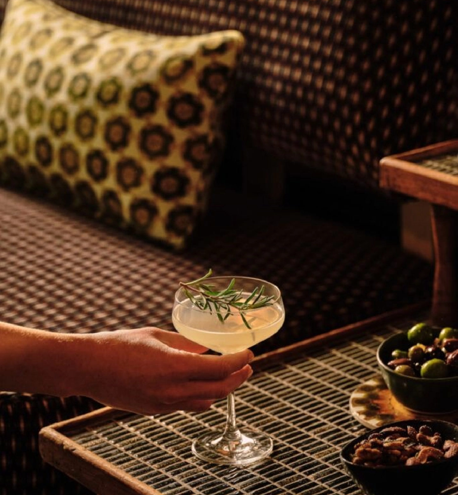

WHERE SHREWSBURY GATHERS
The Boathouse is one of Shrewsbury’s most loved historic pubs. Its stunning location on the banks of the River Severn allows it magnificent views of the river and the Quarry park.